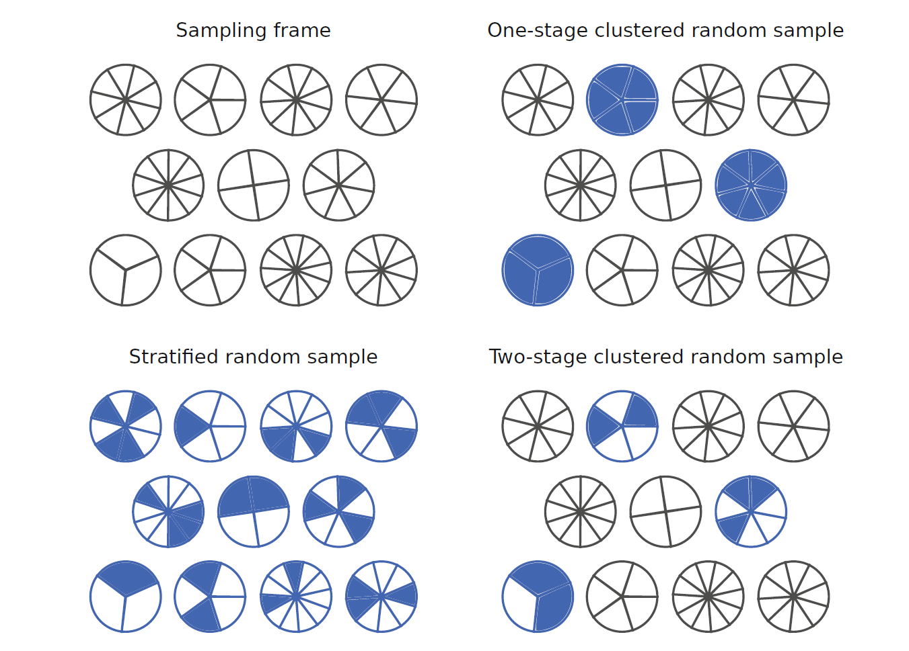
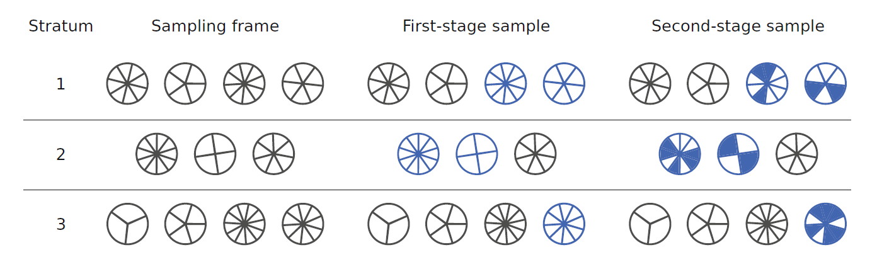

보건의료 연구에서는 표본에서 얻은 정보를 이용하여 모집단의 질병부담, 의료이용, 건강행태, 의료비와 같은 특성을 추정한다. 지금까지의 분석에서는 표본이 모집단에서 독립적으로 같은 확률로 추출된 단순확률표본이라고 가정하였다. 그러나 실제 국가 단위 보건조사는 비용과 조사 효율을 고려하여 층화, 군집화, 다단계 추출과 불균등 추출확률을 함께 사용한다.
복합표본조사(complex sample survey)의 분석에서는 관측된 값뿐 아니라 어떻게 표본이 추출되었는가가 추정량과 표준오차를 결정한다. 조사설계를 무시하면 모집단 평균이나 비율이 편향될 수 있고, 표준오차가 지나치게 작거나 크게 계산될 수 있다.
조사자료 분석의 핵심은 다음 세 요소를 함께 반영하는 것이다.
복합표본조사에서는 먼저 무엇을 무작위로 보는가를 명확히 해야 한다. 설계기반 추론(design-based inference)은 유한한 모집단의 값 \(y_1,\ldots,y_N\)을 고정된 것으로 보고, 표본추출지시변수 \(I_i=I(i\in s)\)의 무작위성만을 이용한다. 이에 비해 모형기반 추론(model-based inference)은 모집단의 관측값 자체를 확률모형에서 생성된 것으로 본다. 국가보건조사의 공식 추정은 주로 설계기반 관점을 사용하지만, 회귀분석과 예측에서는 설계기반 분산과 통계모형을 결합한 모형보조(model-assisted) 접근이 널리 사용된다.
예를 들어 모집단 평균
\[
\bar Y_U=\frac{1}{N}\sum_{i=1}^{N}y_i
\]
은 이미 존재하는 유한모집단의 기술적 특성이다. 표본조사의 목적은 새로운 확률변수의 모수를 추정하는 것이라기보다, 표본추출설계가 유도하는 불확실성을 이용해 이 유한모집단 특성을 추정하는 데 있다. 따라서 같은 관측자료라도 어떤 설계에서 추출되었는지에 따라 표준오차와 신뢰구간이 달라진다.
층화(stratification): 모집단을 상호 배타적인 층으로 나누고 각 층에서 독립적으로 표본을 추출한다.
군집화(clustering): 개인이 아니라 지역, 학교, 병원 또는 가구와 같은 군집을 먼저 추출한다.
가중치(weighting): 각 조사대상자의 추출확률, 무응답 조정과 사후층화 정보를 반영한다.
9.2 보건조사의 측정 특성
보건조사는 행정자료만으로는 얻기 어려운 건강상태, 증상, 건강행태, 의료접근성, 삶의 질과 만족도 등을 직접 측정할 수 있다. 반면 자기보고 자료에는 여러 유형의 비표본오차가 발생할 수 있다.
9.2.1 무응답 편향
표본으로 선택된 사람이 조사에 응답하지 않고, 응답자와 비응답자가 관심 결과에서 체계적으로 다르면 무응답 편향(non-response bias)이 발생한다. 예를 들어 건강이 매우 나쁜 사람은 조사에 참여하기 어려울 수 있고, 의료서비스에 불만이 큰 사람은 만족도 조사에 더 적극적으로 응답할 수 있다.
무응답은 조사설계 단계의 추적조사, 응답 방식의 다양화와 인센티브를 통해 줄일 수 있다. 분석 단계에서는 응답확률의 역수를 이용한 무응답 조정이나 보조정보를 이용한 가중치 보정을 사용할 수 있다.
9.2.2 회상 편향
과거의 질병, 치료, 의료이용 또는 건강행태를 정확히 기억하지 못하거나, 결과 상태에 따라 기억의 정확성이 달라지는 경우 회상 편향(recall bias)이 생긴다. 최근 사건이나 중요한 사건은 비교적 잘 기억하지만, 오래된 외래방문이나 경미한 증상은 과소보고될 수 있다.
9.2.3 사회적 바람직성 편향
흡연, 음주, 식습관, 안전벨트 착용, 성행동처럼 사회적 평가가 개입될 수 있는 문항에서는 응답자가 실제 행동보다 사회적으로 바람직한 방향으로 답할 수 있다. 익명성 보장, 중립적인 질문 문구와 자기기입 방식은 이러한 편향을 완화하는 데 도움이 된다.
9.2.4 표본오차와 비표본오차
표본오차(sampling error)는 모집단의 일부만 조사하기 때문에 생기는 무작위 변동이며, 조사설계를 반영한 분산과 표준오차로 정량화할 수 있다. 반면 측정오차, 비응답, 자료처리 오류와 조사틀의 불완전성은 비표본오차(non-sampling error)이다. 표본크기가 커지면 표본오차는 줄어들지만 비표본오차가 자동으로 감소하는 것은 아니다.
이 구분은 전체조사오차(total survey error) 관점에서 더 체계적으로 이해할 수 있다. 목표모집단과 표본틀이 일치하지 않으면 포괄오차(coverage error)가 생기고, 표본틀에서 표본을 뽑는 과정에는 표본오차가 발생한다. 선택된 대상자가 응답하지 않으면 단위무응답오차가, 일부 문항에만 답하지 않으면 문항무응답오차가 생긴다. 이후 질문 이해, 기억, 조사원 효과, 코딩과 자료처리에서도 오차가 추가될 수 있다.
응답지시변수를 \(R_i\)라고 하면 응답자 평균은 일반적으로
\[
E(Y_i\mid R_i=1)
\]
을 반영한다. 이것이 목표모집단 평균 \(E(Y_i)\)과 같으려면 응답이 결과와 무관하거나, 관측된 보조변수 \(X_i\)를 조건으로
\[
R_i \perp Y_i \mid X_i
\]
와 같은 설명가능한 무응답 가정이 필요하다. 무응답 가중치와 다중대치는 이 가정을 자료와 보조정보를 이용해 구현하는 방법이지, 무응답 편향을 자동으로 제거하는 절차는 아니다.
9.3 대표적인 보건조사
미국의 대표적인 보건조사에는 National Health Interview Survey(NHIS), National Health and Nutrition Examination Survey(NHANES), Medical Expenditure Panel Survey(MEPS)가 있다.
NHIS는 매년 실시되는 가구면접조사로 질병, 건강행태, 보험보장과 의료접근성을 폭넓게 측정한다. NHANES는 면접에 신체검사와 혈액검사를 결합하여 혈압, 체질량지수와 당화혈색소 같은 객관적 지표를 제공한다. MEPS는 의료이용과 의료비를 정교하게 조사하는 패널조사로, NHIS 표본의 일부를 추적하여 개인과 가구 수준의 종단정보를 수집한다.
이들 조사는 단순무작위표본이 아니라 층화와 다단계 군집추출을 사용하며, 각 자료에는 층, 1차 추출단위와 가중치 변수가 함께 제공된다.
9.4 조사설계의 기본 요소
9.4.1 표본틀과 포함확률
표본틀(sampling frame)은 표본을 추출할 수 있는 모집단 단위의 목록이다. 모집단 단위 \(i\)가 표본에 포함될 확률을 포함확률(inclusion probability)이라 하고
\[
\pi_i=P(i\in s)
\]
로 나타낸다. 단순무작위추출에서는 모든 단위의 포함확률이 같지만, 복합조사에서는 특정 하위집단을 과대표집하기 때문에 포함확률이 서로 다를 수 있다.
이다. 여기서 \(1-n/N\)은 유한모집단 보정(finite population correction, FPC)이다. 표본추출률 \(n/N\)이 매우 작으면 이 항은 거의 1이 된다.
유한모집단 보정은 복원 없이 추출할 때 이미 선택된 단위가 다시 선택될 수 없다는 음의 의존성을 반영한다. 복원추출이라면 각 추출은 독립이므로 분산이 \(S_Y^2/n\)이지만, 비복원추출에서는 표본이 모집단 전체에 가까워질수록 남아 있는 불확실성이 줄어든다. \(n=N\)이면 전수조사이므로
\[
1-\frac{n}{N}=0
\]
이고 표본오차도 0이 된다. 다단계 설계에서는 각 단계의 추출률이 작지 않을 때 단계별 FPC를 지정해야 하며, 최종 개인 수준의 전체 추출률만으로는 충분하지 않을 수 있다.
9.5 층화추출
층화추출은 모집단을 \(H\)개의 서로 겹치지 않는 층으로 분할한 뒤 각 층에서 독립적으로 표본을 추출한다. 층 \(h\)의 모집단 크기와 표본크기를 각각 \(N_h\), \(n_h\)라고 하면
비례배분 층화추출은 두 번째 항인 층 간 차이를 표본오차의 원천에서 제거한다. 따라서 층화변수가 결과와 강하게 관련될수록 효율이 높아진다. 반대로 층을 지나치게 세분화하여 층당 PSU가 하나만 남으면 분산추정이 어려워질 수 있다.
9.5.1 비례배분과 최적배분
비례배분에서는 모집단에서 각 층이 차지하는 비율과 같은 비율로 표본을 배분한다.
\[
n_h=n\frac{N_h}{N}
\]
층별 조사비용이 같고 층별 표준편차가 다를 때 Neyman 배분은
\[
n_h
=
n\frac{N_hS_h}{\sum_{k=1}^{H}N_kS_k}
\]
을 사용한다. 변동이 큰 층에 더 많은 표본을 배분함으로써 주어진 전체 표본크기에서 분산을 최소화한다.
층별 단위조사비용이 \(c_h\)로 서로 다르면 비용을 고려한 최적배분은
\[
n_h
\propto
\frac{N_hS_h}{\sqrt{c_h}}
\]
가 된다. 즉 변동이 크고 모집단 규모가 큰 층에는 더 많이 배분하되, 조사비용이 큰 층에는 상대적으로 적게 배분한다. Neyman 배분은 조사 설계 단계에서 사용하는 원리이고, 사후층화는 표본을 얻은 뒤 알려진 모집단 분포에 맞추는 분석 단계의 가중치 보정이라는 점에서 구분된다.
9.5.2 불균등 층화와 가중치
희귀질환자, 특정 연령대 또는 소수집단을 충분히 확보하기 위해 일부 층을 과대표집할 수 있다. 이 경우 조사자료에서 관측된 단순비율은 모집단 비율과 다를 수 있으므로 반드시 설계가중치를 적용해야 한다.
군집추출에서는 개인을 직접 추출하지 않고 자연적으로 형성된 집단을 먼저 추출한다. 전국조사에서는 지역이나 조사구를 1차 추출단위(primary sampling unit, PSU)로 선택하고, 그 안에서 가구와 개인을 순차적으로 추출하는 경우가 많다.

그림에서 단순무작위추출은 모집단 전체의 개인이 직접 추출단위가 되는 반면, 군집추출은 먼저 몇 개의 집단을 선택한 뒤 그 안의 개인을 조사한다. 군집 안의 관측값이 서로 비슷하면 같은 군집에서 개인을 더 많이 조사해도 새로운 정보의 증가가 제한된다. 반면 서로 다른 군집을 추가로 선택하면 새로운 환경과 특성을 포함할 가능성이 커지므로, 총 표본수가 같을 때는 군집 수를 늘리는 것이 군집당 표본수를 늘리는 것보다 효율적인 경우가 많다.
1단계 군집추출에서는 선택된 군집 안의 모든 단위를 조사한다. 2단계 군집추출에서는 군집을 먼저 뽑은 뒤 각 선택 군집 안에서 다시 일부 단위를 추출한다. 층화와 달리 군집추출은 주로 조사비용과 이동비용을 줄이기 위해 사용한다.
9.6.1 군집 내 상관
같은 군집에 속한 사람들은 지역환경, 의료기관, 사회경제적 조건이나 가족 특성을 공유하므로 결과가 서로 유사할 수 있다. 군집 내 상관계수(intraclass correlation coefficient, ICC)를 \(\rho\)라고 하고 군집크기가 모두 \(m\)이라고 하면 군집화에 따른 대표적인 설계효과는
로 근사할 수 있다. 큰 군집이 소수 존재하면 동일한 평균 군집크기에서도 설계효과가 더 커질 수 있다.
9.6.2 1단계 군집평균
군집 \(j\)의 크기를 \(M_j\), 군집합계를 \(t_j=\sum_{i=1}^{M_j}y_{ji}\)라고 하자. 군집을 같은 확률로 추출하고 선택된 군집의 모든 단위를 조사하면 모집단 총계는 군집합계의 평균을 확대하여 추정할 수 있다.
\[
\widehat T_Y
=
\frac{J}{m}\sum_{j\in s}t_j
\]
여기서 \(J\)는 모집단 군집 수, \(m\)은 선택된 군집 수이다. 군집크기가 서로 크게 다르면 확률비례크기추출(probability proportional to size, PPS)을 고려해야 한다.
PPS에서는 군집 \(j\)의 1단계 포함확률을 군집크기 \(M_j\)에 비례하게 둔다.
\[
\pi_j
\propto
M_j
\]
그 뒤 각 선택 군집에서 같은 수의 개인을 추출하면, 큰 군집은 선택될 가능성이 높지만 그 안에서 개인이 선택될 조건부 확률은 낮아진다. 두 확률의 곱이 일정하게 설계되면 개인 수준에서 자기가중설계(self-weighting design)가 될 수 있다. 다만 실제 최종가중치는 무응답과 보정 과정을 거치므로 동일하지 않을 수 있다.
9.7 다단계 층화 군집설계
국가조사는 층화와 군집추출을 결합한다. 각 층에서 여러 PSU를 선택한 뒤, PSU 안에서 가구나 개인을 추가로 추출한다.

그림은 층화가 표본의 대표성과 정밀도를 확보하는 수평적 분할이라면, 다단계 추출은 조사비용을 줄이기 위한 단계적 선택임을 보여준다. 같은 층에 속한 PSU는 서로 비교 가능한 1단계 추출단위이고, 분산은 개인 간 변동이 아니라 먼저 층 내 PSU 간 변동을 이용해 추정된다. 따라서 개인 수가 매우 많더라도 실제 독립적인 설계정보의 수는 PSU 수에 더 가깝다.
개인 \(i\)가 속한 PSU가 1단계에서 선택될 조건부 확률을 \(\pi_{1hji}\), 선택된 PSU 안에서 개인이 2단계에서 선택될 조건부 확률을 \(\pi_{2hji}\)라고 하면 전체 포함확률은
복합설계에서 층 안에 적어도 두 개의 PSU가 있어야 층 내 군집간 변동을 직접 추정할 수 있다. 단일 PSU 층이 존재하면 자료 제공기관이 제시한 결합층 또는 분산추정 규칙을 적용해야 한다.
Taylor 선형화에서 사용하는 대표적인 설계 자유도는
\[
\operatorname{df}_{design}
=
G-H
\]
이다. 여기서 \(G\)는 전체 PSU 수, \(H\)는 층 수이다. 대규모 개인 표본이라도 PSU 수가 적으면 자유도가 작으므로 정규분포 대신 이 자유도를 갖는 \(t\) 분포를 사용한 신뢰구간이 더 적절하다. 단일 PSU 층을 임의로 독립관측처럼 처리하면 군집 간 변동을 추정할 수 없어 표준오차가 왜곡된다.
분모 \(\widehat T_1=\sum_iw_i\)도 확률변수이므로 유한표본에서 정확히 불편하지는 않지만, 알려진 또는 추정된 모집단 크기로 정규화함으로써 보통 Horvitz–Thompson 평균보다 안정적이다. 1차 Taylor 전개를 적용하면 비율 \(R=T_Y/T_X\)의 선형화 변수는
\[
z_i
=
\frac{y_i-Rx_i}{T_X}
\]
가 된다. 즉 비율추정량의 분산은 원자료 \(y_i\)가 아니라 잔차형 변수 \(y_i-Rx_i\)의 총계분산으로 근사된다.
9.8.2 무응답 조정
조정셀 \(g\) 안에서 표본대상자 수가 \(n_g\), 응답자 수가 \(r_g\)이면 단순한 무응답 조정계수는
\[
a_g=\frac{n_g}{r_g}
\]
이고 조정가중치는
\[
w_i^{NR}=w_i^{base}a_g
\]
이다. 실제 조사에서는 응답성향모형이나 세분화된 가중치 등급을 사용할 수 있다.
응답확률을 \(p_i=P(R_i=1\mid X_i)\)라고 하면 응답자에 대한 역응답확률 가중치는
\[
w_i^{NR}
=
\frac{w_i^{base}}{\widehat p_i}
\]
형태로 쓸 수 있다. 이 조정이 편향을 줄이려면 응답확률모형에 결과와 응답 모두에 관련된 보조변수가 포함되어야 하고, 모든 대상자의 응답확률이 0보다 충분히 커야 한다. 응답확률이 매우 작은 대상자는 큰 가중치를 만들기 때문에, 무응답 편향 감소와 분산 증가 사이의 상충이 생긴다.
9.8.3 사후층화와 보정
표본의 가중분포를 알려진 모집단 보조변수의 분포에 맞추기 위해 사후층화(post-stratification), raking 또는 calibration을 적용한다. 보정가중치 \(w_i^*\)는 알려진 모집단 총계 \(X\)에 대해
\[
\sum_{i\in s}w_i^*x_i=X
\]
을 만족하도록 정한다.
이 과정은 표본의 대표성을 개선하고 보조변수가 결과와 관련되어 있으면 분산도 감소시킬 수 있다. 그러나 극단적인 가중치를 만들 수 있으므로 가중치 절단 또는 평활화가 사용되기도 한다.
보정은 원래 설계가중치 \(d_i\)에서 너무 멀리 벗어나지 않으면서 보정방정식을 만족하도록 가중치를 선택하는 최적화 문제로 나타낼 수 있다. 예를 들어 카이제곱 거리를 사용하면
Kish 식은 가중치가 결과와 무관하고 단순무작위표본에서 가중치 변동만 추가된다는 근사에 기초한다. 실제 설계효과는 층화, 군집화, 가중치와 결과의 관계가 함께 결정하므로 변수와 추정량마다 다를 수 있다. 또한 가중치를 일정한 상수로 나누는 정규화는 평균이나 회귀계수 같은 비율형 추정량의 점추정을 바꾸지 않지만, 모집단 총계 추정에는 원래 척도의 가중치가 필요하다.
가중치 절단은 극단적 가중치를 줄여 분산을 감소시키지만 보정방정식과 설계불편성을 훼손할 수 있다. 따라서 절단 전후의 추정치, 표준오차, 유효표본크기와 보조변수 균형을 함께 비교해야 한다.
이 출력에서 weight_design_effect가 1보다 크면 가중치 변동만으로도 분산이 증가할 가능성이 있음을 뜻한다. effective_sample_size는 명목 표본수 1,000명 중 균등가중 표본 몇 명과 비슷한 정보량을 갖는지를 근사한다. 이는 특정 결과변수의 실제 설계효과가 아니라 가중치 분포만을 요약한 진단값이다.
9.9 설계효과와 분산추정
설계효과(design effect)는 실제 조사설계에서의 분산을 같은 크기의 단순무작위표본 분산과 비교한 값이다.
는 단순무작위추출 표준오차에 곱해지는 배율로 해석할 수 있다. 예를 들어 \(\operatorname{DEFF}=2.25\)이면 표준오차는 단순무작위추출보다 약 \(1.5\)배 크다. 설계효과는 하나의 조사 전체에 고정된 값이 아니라 결과변수, 부분모집단과 추정량에 따라 달라진다.
9.9.1 Taylor 선형화
비율, 회귀계수와 같은 비선형 추정량 \(\widehat\theta=g(\widehat T)\)은 Taylor 전개를 통해 선형화한다.
따라서 선형화 잔차 \(e_i=y_i-Rx_i\)의 총계분산을 추정하면 된다. 이 원리는 회귀계수, 오즈비, 표준화 평균과 같은 복잡한 통계량에도 동일하게 적용된다.
9.9.2 반복가중치 방법
복잡한 설계에서는 jackknife repeated replication(JRR), balanced repeated replication(BRR)과 bootstrap 반복가중치를 사용할 수 있다. \(R\)개의 반복추정량을 \(\widehat\theta^{(r)}\)라고 하면 일반적인 반복분산은
JRR은 한 번에 한 PSU를 제외하고 나머지 가중치를 조정하여 반복표본을 만든다. BRR은 각 층에 두 개의 PSU가 있을 때 Hadamard 행렬을 이용해 층마다 하나의 PSU를 선택하는 균형 반복을 구성한다. Fay의 BRR은 제외되는 PSU의 가중치를 완전히 0으로 만들지 않고 일부를 남겨 추정의 불안정을 줄인다. 조사 bootstrap은 설계의 각 추출단계를 모방하여 PSU를 재표본추출하거나 제공기관이 미리 생성한 반복가중치를 사용한다.
반복가중치는 단순한 계산 편의가 아니라 표본설계와 가중치 보정과정을 함께 복제해야 한다. 공식자료가 반복가중치를 제공한다면 사용자가 원자료에서 임의로 일반 bootstrap을 수행하는 것보다 제공된 가중치를 사용하는 것이 바람직하다.
9.9.3 단일 PSU 층과 분산추정
층 안에 PSU가 하나뿐이면 층 내 PSU 간 변동을 계산할 수 없다. 가능한 처리에는 유사한 층과 결합, 중심화된 전체 평균 변동 사용, 보수적인 평균분산 대입 등이 있지만 결과는 서로 다를 수 있다. 가장 우선되는 원칙은 자료 제공기관이 정한 결합층 또는 반복가중치를 따르는 것이다. 소프트웨어 옵션으로 문제를 숨기기보다 어떤 규칙을 사용했는지 보고해야 한다.
9.10 조사자료의 기술통계
조사자료에서 비율, 평균, 총계와 분산은 모두 가중치와 설계를 반영해야 한다.
이분형 변수 \(y_i\in\{0,1\}\)의 가중비율은
\[
\widehat P
=
\frac{\sum_iw_iy_i}{\sum_iw_i}
\]
이고 가중총계는
\[
\widehat T
=
\sum_iw_iy_i
\]
이다.
단순 가중평균만 계산하고 층과 군집을 무시하면 점추정은 같을 수 있지만 표준오차는 올바르지 않다. 조사분석 함수는 가중치뿐 아니라 층과 PSU를 함께 지정해야 한다.
비율이 0이나 1에 가까울 때 대칭적인 Wald 신뢰구간
\[
\widehat P
\pm
z_{1-\alpha/2}SE(\widehat P)
\]
은 \([0,1]\) 범위를 벗어날 수 있다. 조사자료에서는 로짓 변환이나 다른 범위보존 변환을 적용한 뒤 역변환하는 방법이 더 안정적일 수 있다. 또한 자유도가 작으면 \(z\) 분위수 대신 설계 자유도에 따른 \(t\) 분위수를 사용한다.
mean_cost와 diabetes_prevalence는 가중치의 공통 배율에 영향을 받지 않는 비율형 추정량이지만, population_diabetes는 가중치 합이 나타내는 모집단 규모에 직접 의존한다. 이 코드만으로는 층화와 군집을 반영한 표준오차를 얻을 수 없으므로, 아래의 조사설계 객체를 이용한 함수가 필요하다.
9.11 R에서 조사설계 지정
R의 survey 패키지는 층, 군집, 가중치와 유한모집단 보정을 반영한 분석을 제공한다. 패키지가 설치된 경우 다음과 같이 조사설계 객체를 만든다.
svymean()은 가중 평균과 함께 층 내 PSU 간 변동에서 계산한 설계기반 표준오차를 반환한다. 이분형 변수 diabetes의 평균은 가중 유병률이다. svytotal()은 같은 유병률에 가중 모집단 규모를 결합하여 모집단 환자 수를 추정하므로, 총계용 가중치가 올바른 척도로 제공되어야 한다.
ids에는 PSU 또는 다단계 군집변수를 지정하고, strata에는 층 변수를, weights에는 최종 조사 가중치를 지정한다. PSU 번호가 층마다 반복되는 경우 nest = TRUE를 사용하는 것이 안전하다.
자료에 단계별 모집단 크기 또는 추출률이 제공되면 fpc에 지정할 수 있다. 이미 최종가중치와 반복가중치에 FPC가 반영되어 있는지는 자료 설명서를 확인해야 한다. 임의로 FPC를 추가하면 분산을 이중으로 감소시킬 수 있다.
위 예제의 weight는 함수 사용법을 보여주기 위해 생성한 모의 가중치이다. 실제 조사에서는 분석대상, 조사연도, 검사 또는 설문영역에 맞는 공식 최종가중치를 선택해야 하며, 서로 다른 조사주기를 결합할 때는 자료 제공기관의 지침에 따라 가중치를 재조정해야 한다.
9.12 조사 가중 회귀분석
조사자료의 회귀분석은 일반 회귀모형의 평균구조를 유지하면서 분산을 조사설계에 맞게 추정한다. 선형 회귀의 평균모형은
\[
E(Y_i\mid X_i)=X_i^T\beta
\]
이고 조사 가중 추정방정식은 개념적으로
\[
\sum_{i\in s}w_iX_i(Y_i-X_i^T\beta)=0
\]
을 푼다. 분산은 독립관측을 가정한 일반 모형기반 분산이 아니라 층과 PSU를 반영한 설계기반 샌드위치 분산으로 계산한다.
이 계산은 회귀모형의 비선형성과 목표모집단의 공변량 분포를 동시에 반영한다. 다만 관찰자료에서 이를 인과효과로 해석하려면 조사대표성 외에 교환가능성, 양성성과 일관성 가정이 추가로 필요하다.
if (requireNamespace("survey", quietly =TRUE) &&exists("des")) { fit_cost <- survey::svyglm(log(cost) ~ diabetes + age + female,design = des ) fit_diabetes <- survey::svyglm( diabetes ~ age + female,design = des,family =quasibinomial() )summary(fit_cost)summary(fit_diabetes)}
Call:
svyglm(formula = diabetes ~ age + female, design = des, family = quasibinomial())
Survey design:
survey::svydesign(ids = ~psu, strata = ~stratum, weights = ~weight,
data = survey_dat, nest = TRUE)
Coefficients:
Estimate Std. Error t value Pr(>|t|)
(Intercept) -4.498293 0.306814 -14.661 7.77e-13 ***
age 0.048885 0.004621 10.579 4.29e-10 ***
female 0.046249 0.141466 0.327 0.747
---
Signif. codes: 0 '***' 0.001 '**' 0.01 '*' 0.05 '.' 0.1 ' ' 1
(Dispersion parameter for quasibinomial family taken to be 1.036402)
Number of Fisher Scoring iterations: 5
fit_cost의 계수는 로그비용의 조건부 평균 차이를 나타낸다. 원래 비용척도의 평균비 또는 평균차이가 목적이라면 재변환 또는 로그 연결 감마모형과 표준화 예측을 고려해야 한다. fit_diabetes의 연령계수는 연령 1세 증가에 따른 조건부 로그 오즈 변화이며, 지수화하면 오즈비가 된다. 두 모형 모두 계수의 점추정뿐 아니라 설계 자유도와 PSU 기반 표준오차를 함께 해석해야 한다.
조사 가중 로지스틱 회귀에서는 binomial()보다 quasibinomial()을 사용하면 비정수 가중치에 대한 불필요한 경고를 피할 수 있다. 계수 추정 자체는 동일하지만 분산은 조사설계 기반으로 계산된다.
9.13 당뇨병과 의료비의 예
보건의료비는 오른쪽으로 크게 치우치고 0이 포함될 수 있으므로 단일 선형회귀보다 2부분 모형이 적합한 경우가 많다. 조사설계에서 2부분 모형은 다음 두 식으로 구성된다.
위 계산의 점추정은 설계가중치를 반영하지만, 주변효과의 표준오차는 두 모형의 추정불확실성을 동시에 반영해야 한다. 반복가중치가 제공되면 각 반복가중치마다 두 모형과 주변예측을 다시 계산하는 방법이 자연스럽다. 반복가중치가 없으면 PSU 단위의 설계기반 bootstrap을 고려할 수 있다.
가 된다. 따라서 전체 주변효과의 분산에는 발생확률 모형과 양의 비용 모형의 분산뿐 아니라 두 모형 추정량의 공분산이 포함된다. 두 모형을 별도로 적합한 뒤 표준오차를 단순 합성하면 이 공분산을 놓칠 수 있으므로, 전체 분석절차를 반복하는 replicate-weight 방법이 자연스럽다.
9.14 부분모집단 분석
조사자료에서 특정 하위집단만 분석할 때는 원자료를 단순히 삭제하지 않고 설계객체에서 부분모집단(subpopulation 또는 domain)을 정의해야 한다. 표본에 남아 있는 다른 관측치는 직접 점추정에 기여하지 않더라도 올바른 분산추정에 필요한 설계정보를 제공할 수 있다.
부분모집단 지시변수를 \(D_i\)라고 하면 영역총계는
\[
T_{Y,D}
=
\sum_{i=1}^{N}D_iY_i
\]
이고 Horvitz–Thompson 추정량은
\[
\widehat T_{Y,D}
=
\sum_{i\in s}w_iD_iY_i
\]
이다. 영역 밖 관측치는 점추정 기여가 0이지만, PSU별 합계의 변동을 계산할 때 표본설계 구조를 유지한다. 원자료에서 영역 밖 관측치를 먼저 삭제하면 일부 층에서 PSU가 사라져 분산이 과소 또는 과대 추정될 수 있다.
예를 들어 65세 이상만 분석할 때는 다음과 같이 처리한다.
if (requireNamespace("survey", quietly =TRUE) &&exists("des")) { older_des <-subset(des, age >=65) survey::svymean(~cost + diabetes, design = older_des)}
mean SE
cost 9951.74193 502.4074
diabetes 0.32013 0.0256
부분모집단의 실제 표본크기와 가중 모집단크기를 함께 보고하는 것이 바람직하다.
9.15 결측자료와 조사설계
가중치는 단위무응답을 어느 정도 조정하지만 문항무응답까지 자동으로 해결하지는 않는다. 완전사례분석은 결측기전이 결과 및 공변량과 관련되면 편향될 수 있다.
단위무응답 가중치와 문항결측 대치는 서로 다른 문제를 다룬다. 최종가중치가 응답자와 비응답자의 차이를 보정하더라도, 응답자 내부에서 특정 문항이 결측이면 해당 분석변수의 완전사례가 다시 선택된 부분표본이 된다. 대치모형에는 분석모형의 변수뿐 아니라 무응답과 관련된 보조변수, 층, PSU와 가중치 정보를 포함하여 표본설계와 결측기전의 관계를 보존해야 한다.
다중대치(multiple imputation)를 사용할 때는 대치모형에 층, PSU, 가중치 또는 이들과 관련된 보조변수를 포함하여 조사설계를 반영해야 한다. 각 대치자료에서 같은 조사설계 분석을 수행한 뒤 Rubin의 규칙으로 결합한다.
대치자료 \(m=1,\ldots,M\)에서 추정량과 분산을 각각 \(\widehat\theta_m\), \(U_m\)이라 하면
\[
B
=
\frac{1}{M-1}\sum_{m=1}^{M}
(\widehat\theta_m-\bar\theta)^2
\]
이고 전체분산은
\[
T
=
\bar U+
\left(1+\frac{1}{M}\right)B
\]
이다.
여기서 \(\bar U\)는 각 대치자료 안에서의 조사설계 분산이고, \(B\)는 결측값을 다르게 채움으로써 생기는 대치 간 변동이다. 따라서 각 대치자료에서 층·PSU·가중치를 무시한 일반분산을 계산한 뒤 Rubin의 규칙만 적용해서는 조사설계 불확실성이 올바르게 반영되지 않는다. 대치 수가 적거나 결측정보 비율이 크고 설계 자유도도 작으면 신뢰구간의 자유도 보정이 중요하다.
9.16 결과 보고 원칙
조사자료 분석 결과에는 다음 정보가 함께 제시되어야 한다.
조사명, 조사연도와 목표모집단
층화, 군집과 추출단계의 개요
최종 가중치의 구성과 적용 여부
표본수와 가중 모집단수
분산추정 방법
사용한 조사분석 소프트웨어와 주요 옵션
부분모집단 정의와 결측자료 처리방법
점추정치, 설계기반 표준오차 또는 95% 신뢰구간
조사설계를 무시한 분석과의 차이가 중요한 경우 그 영향
가중치가 적용된 결과를 단순히 “표본의 평균”이나 “표본의 비율”이라고 표현하면 해석이 모호해진다. 해당 추정치가 목표모집단을 대표하도록 가중된 추정량인지 명확히 밝혀야 한다.